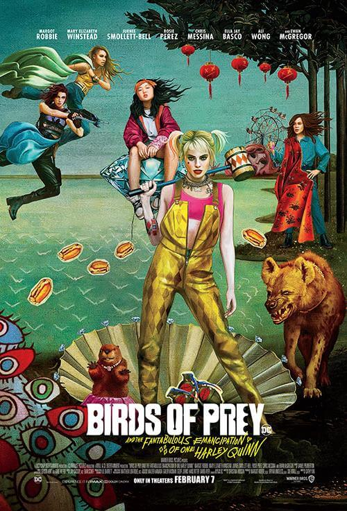

Birds of Prey
Después de separarse de Joker, Harley Quinn y otras tres heroínas, Canario Negro, Cazadora y Renée Montoya, unen sus fuerzas para salvar a una niña del malvado rey del crimen Máscara Negra.